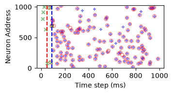
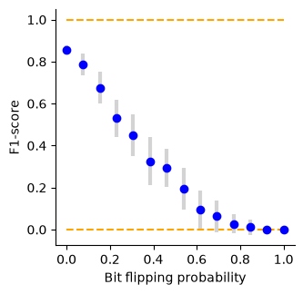

Testing robustness to input noise (p_flip)¶
The model trained (notebook 11) on patterns with p_flip = 0.01 is evaluated as the stochasticity of the trigger grows: each call of the pattern generator balanced-flips a fraction p_flip of the frozen target’s bits, so the input trigger deviates more and more from the stored memory while keeping its firing rate. A healthy HD-SNN should degrade gracefully - retrieval is a pattern-completion problem, tolerant to corrupted cues.
Notebook summary¶
Pipeline¶
Load the trained vanilla model on the stochastic generator.
Single-noise probe at
p_flip = 0.01(raster + F1 on the evoked window).Sweep
p_flipinN_scan=14values xN_cv=11seeded repetitions -><datetag>_noise.npz, plot F1 (mean +/- std) vs bit-flip probability (p_flip_score.pdf).Control condition: retrain (
learn_model) a dedicated model for eachp_flip-><datetag>_noise_retrain.npz, and overlay (p_flip_retrain_score.pdf).
Main outputs¶
caches
<datetag>_noise.npz(fixed weights) and<datetag>_noise_retrain.npz(retrained);figures
p_flip_target.pdf(raster),p_flip_score.pdf,p_flip_retrain_score.pdf.
Notes¶
Same evoked-window convention as notebook 11 (
spikes[..., N_pretime+num_delay : ]vstarget[..., num_delay :]).Repetitions are seeded nb 20-style (
pattern_object(seed=...),torch.manual_seed,seed += 1per repetition) so theN_cvrealisations are reproducible; the response is scored against the cleanfrozen_target, so the sweep measures pattern completion from a degraded cue.scores_npis(N_scan, N_cv), saved after each scan point (crash-resumable).The retrain control trains one model per
p_flip(learning outside thei_cvloop), then evaluates itN_cvtimes under the same protocol.
[ ]:
# torch, numpy, cache dir, RECOMPUTE switch, scorers and plotting helpers come from
# mnesis_boilerplate; the model/algorithm and the pattern generator from mnesis_chains.
from mnesis_boilerplate import torch, np, plt, splt, data_cache, figpath, RECOMPUTE, Params, SubplotParams
from mnesis_boilerplate import printfig, get_scores, get_f1score, trange
from mnesis_chains import StochasticSpikingPattern, HD_SNN, load
# RECOMPUTE = True
datetag = '2026-09-07'
Using device: mps
Loading the trained model¶
For reproducibility of the frozen target, Params(p_flip=0.0) still seeds the same population (same seed); the per-call p_flip of the generator is overridden below (hd.pattern_object.opt.p_flip = ...) for the probes.
[2]:
opt = Params(p_flip=0.0)
model_filename = data_cache / f"{opt.datetag}_vanilla.pth"
hd = load(opt, model_filename)
print(f"Model weights loaded from {model_filename}")
Model weights loaded from ../cached_data/2026-09-07_vanilla.pth
[3]:
opt = Params()
hd = HD_SNN(opt, StochasticSpikingPattern())
hd.net.to(hd.opt.device)
model_filename = data_cache / f"{hd.opt.datetag}_vanilla.pth"
model_state_dict = torch.load(model_filename, map_location=torch.device(hd.opt.device))
hd.net.load_state_dict(model_state_dict)
hd.net.eval()
print(f"Model weights loaded from {model_filename}")
Model weights loaded from ../cached_data/2026-09-07_vanilla.pth
Single retrieval trial under mild noise¶
Trigger p_flip=0.01 (the training regime): the reference motif (i_pattern=0) is read back through the usual evoked-window slices. Expect scores close to notebook 11’s post-learning values (f1 ~ 0.85) since the model was trained at this noise level.
Raster of the noisy-trial retrieval¶
Same legend as notebook 11: green x trigger (noisy first num_delay ms), open red o target, blue + evoked response; dashed verticals at N_pretime and N_pretime+num_delay.
[4]:
with torch.no_grad():
hd.pattern_object.opt.p_flip = .01
target = hd.pattern_object()
target_full = torch.nn.functional.pad(target, (opt.N_pretime, opt.N_pretime))
input_spikes = hd.get_input_spikes(target=target)
_, _, spikes = hd.forward_pass(input_spikes)
spikes_evoked = spikes[:, :, (hd.opt.N_pretime+hd.opt.num_delay):(hd.opt.N_time+hd.opt.N_pretime)]
target_evoked = target[:, :, hd.opt.num_delay:]
precision, recall, f1_score = get_scores(spikes_evoked, target_evoked)
print(f'precision = {precision:.3f}\t recall = {recall:.3f}\t f1_score = {f1_score:.3f} ')
precision = 0.898 recall = 0.806 f1_score = 0.850
[5]:
fig, ax = plt.subplots()
splt.raster(spikes[opt.i_pattern, :opt.N_neuron_show, :opt.N_time_show].T, ax, s=25, c="blue", marker='+', alpha=.5)
splt.raster(target_full[opt.i_pattern, :opt.N_neuron_show, :opt.N_time_show].T, ax, s=25, facecolor='none', edgecolor='red', marker='o', alpha=.5)
splt.raster(input_spikes[opt.i_pattern, :opt.N_neuron_show, :opt.N_time_show].T, ax, s=25, c="green", marker='x', alpha=.5)
ax.vlines([opt.N_pretime], 0, opt.N_neuron_show, 'r', ls='--')
ax.vlines([opt.N_pretime+opt.num_delay], 0, opt.N_neuron_show, 'b', ls='--')
ax.set_xlabel("Time step (ms)")
ax.set_ylabel("Neuron Address")
ax.set_ylim(-1., opt.N_neuron_show + 1.)
printfig(fig, 'p_flip_target', fig_width=opt.fig_width, fig_height=opt.fig_height, figpath=figpath)
spikes.shape, spikes[opt.i_pattern, :, :].sum().item(), target[opt.i_pattern, :, :].sum().item()
Saving as ../figures/p_flip_target.pdf
Saving as ../figures/p_flip_target.png
Saving as ../figures/p_flip_target.svg
[5]:
(torch.Size([16, 1024, 1100]), 146.0, 139.0)

Sweep: fixed weights, increasing trigger noise¶
get_scores_noise: for N_scan values of p_flip (linspace 0..1) and N_cv independent realisations each, trigger the network and score the evoked window; the trigger itself is corrupted (target_ = pattern_object()) while scoring still uses the clean stored target - i.e. classic pattern completion from a degraded cue. Results cached as <datetag>_noise.npz (arrays p_flip, scores_np) under the standard .lock protocol.
[6]:
# Fixed-weights sweep with N_cv repetitions per scan point: each repetition is an
# independent stochastic cue (flip seed passed to pattern_object, spontaneous pads
# seeded by torch.manual_seed - nb 20''s seed += 1 convention), scored against the
# clean frozen_target: classic pattern completion from a degraded cue. The cache is
# written after every scan point (with an n_done sentinel) so an interrupted run can
# resume from the file and a partial file is never mistaken for a complete one.
def get_scores_noise(N_scan=opt.N_scan, N_cv=opt.N_cv):
p_flip = np.linspace(0, 1, N_scan, endpoint=True)
scores_np = np.zeros((N_scan, N_cv))
target_evoked = hd.pattern_object.frozen_target[:, :, hd.opt.num_delay:]
seed = hd.opt.seed # base seed, incremented per repetition (nb 20 convention)
for i_scan in trange(N_scan):
for i_cv in range(N_cv):
with torch.no_grad():
hd.pattern_object.opt.p_flip = p_flip[i_scan]
torch.manual_seed(seed)
target_ = hd.pattern_object(seed=seed)
input_spikes = hd.get_input_spikes(target=target_)
_, _, spikes = hd.forward_pass(input_spikes)
spikes_evoked = spikes[:, :, (hd.opt.N_pretime+hd.opt.num_delay):(hd.opt.N_time+hd.opt.N_pretime)]
scores_np[i_scan, i_cv] = get_f1score(spikes_evoked, target_evoked)
seed += 1
np.savez(npy_filename, p_flip=p_flip, scores_np=scores_np, n_done=i_scan + 1) # incremental save
return p_flip, scores_np
npy_filename = data_cache / f"{hd.opt.datetag}_noise.npz"
lock_filename = npy_filename.with_suffix('.lock')
if RECOMPUTE:
npy_filename.unlink(missing_ok=True) # FORCING RECOMPUTE
lock_filename.unlink(missing_ok=True) # FORCING RECOMPUTE
try:
data = np.load(npy_filename)
p_flip = data['p_flip']
scores_np = data['scores_np']
if data['scores_np'].shape != (opt.N_scan, opt.N_cv) or ('n_done' not in data) or (data['n_done'] != opt.N_scan):
raise ValueError(f"Partial score file: {npy_filename}, re-evaluating.")
lock_filename.unlink(missing_ok=True) # in case the lock file was not unlinked
print(f"Score weights loaded from {npy_filename}") # Add a log message
except (FileNotFoundError, ValueError):
if not lock_filename.exists():
print(f"Score file not found: {npy_filename}, evaluating the score.")
lock_filename.touch(exist_ok=True)
##################
p_flip, scores_np = get_scores_noise()
##################
np.savez(npy_filename, p_flip=p_flip, scores_np=scores_np, n_done=opt.N_scan)
lock_filename.unlink(missing_ok=True)
else:
print(f"Score file is locked: {lock_filename}, passing.")
Score weights loaded from ../cached_data/2026-09-07_noise.npz
[7]:
# Reload the fixed-weights sweep (with named keys, tolerant of the n_done field).
data = np.load(npy_filename)
p_flip, scores_np = data['p_flip'], data['scores_np']
[8]:
# Layout constants for the scan figures (spine styling).
subplotpars_scan = SubplotParams(left=0.125, right=.95, bottom=0.25, top=.975)
[9]:
# $F_1$ as a function of the bit-flipping probability $p_\mathrm{flip}$: mean +/- std over N_cv realisations.
if not lock_filename.exists():
fig, ax = plt.subplots()
ax.hlines([0, 1], p_flip[0], p_flip[-1], 'orange', ls='--', lw=0.8)
ax.errorbar(p_flip, scores_np.mean(axis=1), yerr=scores_np.std(axis=1), fmt='o',
color='tab:blue', ecolor='0.5', elinewidth=0.8, capsize=1.5,
markersize=3.5, linestyle='solid', linewidth=1.0)
ax.set_xlabel(r"$p_\mathrm{flip}$")
ax.set_ylabel(r"$F_1$-score")
ax.set_xlim(p_flip[0], p_flip[-1])
ax.set_ylim(-0.05, 1.05)
printfig(fig, 'p_flip_score', fig_width=opt.fig_width, fig_height=opt.fig_width, figpath=figpath)
Saving as ../figures/p_flip_score.pdf
Saving as ../figures/p_flip_score.png
Saving as ../figures/p_flip_score.svg

Control: re-train the network for each noise level to improve WM¶
If graceful degradation is caused by training at p_flip=0.01 only, training a matched model per noise level should push the whole F1 curve up. Hypothesis under test: robustness to corrupted cues is learnable (data augmentation at the right level). Each scan point trains a fresh readout (learn_model, verbose=False) on a Params instantiated with that p_flip, then evaluates it N_cv times with the same protocol as the fixed-weights sweep. Cached as
<datetag>_noise_retrain.npz.
[ ]:
# Control condition: one freshly trained model per p_flip (learning hoisted out of the
# CV loop, with local variables so the global hd/opt/model_filename are left untouched),
# then evaluated N_cv times under the same seeded protocol and the same frozen-target
# reference as the fixed-weights sweep. Incremental save with an n_done sentinel.
def get_scores_retrain_noise(N_scan=opt.N_scan, N_cv=opt.N_cv):
p_flip = np.linspace(0., 1., N_scan, endpoint=True)
scores_np = np.zeros((N_scan, N_cv))
i_start = 0
if npy_filename.exists(): # resume: each scan point re-seeds itself (Params.__post_init__),
data = np.load(npy_filename) # so cached rows are valid; continue after n_done
if data['scores_retrain_np'].shape == (N_scan, N_cv):
scores_np = data['scores_retrain_np']
i_start = int(data['n_done']) if 'n_done' in data else N_scan
seed = opt.seed + opt.N_cv * i_start # base seed, incremented per repetition (nb 20 convention)
for i_scan in trange(i_start, N_scan):
##################
opt_local = Params(p_flip=p_flip[i_scan])
model_filename_local = data_cache / f"{opt_local.datetag}_vanilla.pth"
hd_local = load(opt_local, model_filename_local)
# REDUNDANT: hd_local.pattern_object.opt.p_flip = p_flip[i_scan]
hd_local.learn_model(verbose=False)
##################
target_evoked = hd_local.pattern_object.frozen_target[:, :, hd_local.opt.num_delay:]
for i_cv in range(N_cv):
with torch.no_grad():
torch.manual_seed(seed)
target_ = hd_local.pattern_object(seed=seed)
input_spikes = hd_local.get_input_spikes(target=target_)
_, _, spikes = hd_local.forward_pass(input_spikes)
spikes_evoked = spikes[:, :, (hd_local.opt.N_pretime+hd_local.opt.num_delay):(hd_local.opt.N_time+hd_local.opt.N_pretime)]
scores_np[i_scan, i_cv] = get_f1score(spikes_evoked, target_evoked)
seed += 1
np.savez(npy_filename, p_flip_retrain=p_flip, scores_retrain_np=scores_np, n_done=i_scan + 1) # incremental save
return p_flip, scores_np
npy_filename = data_cache / f"{hd.opt.datetag}_noise_retrain.npz"
lock_filename = npy_filename.with_suffix('.lock')
if RECOMPUTE:
npy_filename.unlink(missing_ok=True) # FORCING RECOMPUTE
lock_filename.unlink(missing_ok=True) # FORCING RECOMPUTE
try:
data = np.load(npy_filename)
p_flip_retrain = data['p_flip_retrain']
scores_retrain_np = data['scores_retrain_np']
if data['scores_retrain_np'].shape != (opt.N_scan, opt.N_cv) or ('n_done' not in data) or (int(data['n_done']) != opt.N_scan):
raise ValueError(f"Partial score file: {npy_filename}, resuming.")
lock_filename.unlink(missing_ok=True) # in case the lock file was not unlinked
print(f"Score weights loaded from {npy_filename}") # Add a log message
except (FileNotFoundError, ValueError):
if not lock_filename.exists():
print(f"Score file not found: {npy_filename}, evaluating the score.")
lock_filename.touch(exist_ok=True)
##################
p_flip_retrain, scores_retrain_np = get_scores_retrain_noise()
##################
np.savez(npy_filename, p_flip_retrain=p_flip_retrain, scores_retrain_np=scores_retrain_np, n_done=opt.N_scan)
lock_filename.unlink(missing_ok=True)
else:
print(f"Score file is locked: {lock_filename}, passing.")
Score file not found: ../cached_data/2026-09-07_noise_retrain.npz, evaluating the score.
0%| | 0/14 [00:00<?, ?it/s]
[ ]:
# Reload the retrain control (robust to the scan cell having taken the locked branch).
try:
data = np.load(npy_filename)
p_flip_retrain, scores_retrain_np = data['p_flip_retrain'], data['scores_retrain_np']
print(f"Retrain scores loaded from {npy_filename}")
except FileNotFoundError:
p_flip_retrain, scores_retrain_np = None, None
print(f"Retrain score file not available yet: {npy_filename} (locked or not computed).")
[ ]:
# Overlay fixed-weights (blue) vs re-trained (red) $F_1$ vs $p_\mathrm{flip}$.
if not lock_filename.exists():
fig, ax = plt.subplots()
ax.hlines([0, 1], p_flip[0], p_flip[-1], 'orange', ls='--', lw=0.8)
ax.errorbar(p_flip, scores_np.mean(axis=1), yerr=scores_np.std(axis=1), fmt='o',
color='tab:blue', ecolor='0.5', elinewidth=0.8, capsize=1.5,
markersize=3.5, linestyle='solid', linewidth=1.0, label='fixed weights')
if scores_retrain_np is not None:
ax.errorbar(p_flip_retrain, scores_retrain_np.mean(axis=1), yerr=scores_retrain_np.std(axis=1), fmt='o',
color='tab:red', ecolor='0.5', elinewidth=0.8, capsize=1.5,
markersize=3.5, linestyle='solid', linewidth=1.0, label='retrained')
ax.set_xlabel(r"$p_\mathrm{flip}$")
ax.set_ylabel(r"$F_1$-score")
ax.set_xlim(p_flip[0], p_flip[-1])
ax.set_ylim(-0.05, 1.05)
ax.legend(loc='best')
printfig(fig, 'p_flip_retrain_score', fig_width=opt.fig_width, fig_height=opt.fig_width, figpath=figpath)